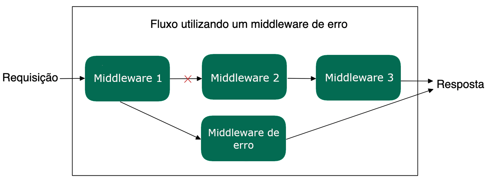

3.14 - Middlewares de Erro
Até o momento, discutimos os middlewares comuns, que recebem os parâmetros req, res e next, e são responsáveis por tratar as requisições quando tudo corre bem. No entanto, ao desenvolver uma aplicação, é crucial lidar com possíveis falhas que possam ocorrer durante o processamento de uma requisição. Para isso, o Express oferece um outro tipo de middleware: o middleware de erro.
O que é um Middleware de Erro?
Um middleware de erro tem uma função específica dentro do ciclo de vida de uma requisição. Ele é projetado para interceptar e lidar com erros que podem ser gerados por outros middlewares ou rotas. Diferente dos middlewares comuns, que tratam requisições bem-sucedidas, o middleware de erro é executado apenas quando algum erro é lançado ou quando a função next() é chamada com um parâmetro de erro.
Como funciona um Middleware de Erro?
Aqui estão alguns pontos importantes sobre middlewares de erro:
-
Ordem Importa: Middlewares de erro devem ser sempre declarados após todas as rotas e middlewares comuns da aplicação. Isso garante que eles sejam acionados somente quando um erro ocorrer em qualquer ponto anterior do fluxo de requisição.
-
Quatro Parâmetros: Diferente dos middlewares normais, o middleware de erro sempre recebe quatro parâmetros:
(err, req, res, next). O primeiro parâmetro,err, é o erro que foi gerado ou passado adiante por um middleware anterior, sinalizando que algo deu errado.
-
Chamando o
next()com Erros: Quando um middleware ou rota chamanext()com um argumento, isso indica que ocorreu um erro. Esse argumento será passado automaticamente para o middleware de erro.
Exemplo de Middleware de Erro
Vamos ver um exemplo prático de como implementar um middleware de erro no Express. Neste caso, usaremos a rota GET /teams, nela utilizaremos o módulo fs para ler um arquivo JSON (teams.json) e retornar seu conteúdo. Porém, como o acesso a arquivos pode gerar erros, toda a lógica de leitura estará envolvida em um bloco try...catch. Se ocorrer algum erro, ele será capturado e passado para o middleware de erro usando o next(error):
// src/app.js
// ...
app.get('/teams', async (req, res, next) => {
try {
// Essa linha gerará um erro, pois o caminho esta errado
const readTeamsFile = await fs.readFile(path.resolve(__dirname, 'teams.json'), 'utf8');
const teams = JSON.parse(readTeamsFile);
return res.status(200).json({ teams });
} catch (error) {
return next(error); // Passa o erro para o middleware de erro
}
});
// ... Outras rotas da aplicação
// Middleware de erro (deve ser o último middleware declarado)
app.use((error, _req, res, _next) => {
return res.status(500).json({ error: error.message });
});
// module.exports = app;
Neste exemplo, a rota /teams tenta ler o arquivo teams.json usando o módulo fs. Como o caminho do arquivo esta errado, ocorre um erro durante a leitura, dessa forma, o bloco catch captura esse erro e o passa para o middleware de erro usando o next(error).
O middleware de erro, por sua vez, é responsável por capturar esse erro e responder ao cliente com um status 500 (Internal Server Error) e uma mensagem de erro no formato JSON, como { error: 'Mensagem do erro' }.
Um exemplo desse fluxo pode ser visualizado na imagem abaixo:

Fluxo utilizando um middleware de erroQuando usar Middlewares de Erro?
Os middlewares de erro são extremamente úteis em várias situações, como:
-
Falhas de Validação: Se algum dado enviado for inválido, o middleware pode interceptar o erro e responder com um status adequado, como
400(Bad Request).
-
Erros de Autenticação: Caso um middleware de autenticação encontre algum problema, como credenciais inválidas, ele pode passar o erro para um middleware de erro, que lida com a resposta apropriada.
-
Erros Internos do Servidor: Quando algo inesperado ocorre no servidor, como uma exceção não tratada, os middlewares de erro podem garantir que o cliente receba uma resposta adequada sem expor detalhes sensíveis.
Estrutura simples de um Middleware de erro
app.use((err, req, res, next) => {
// Lógica do código
res.status(500).json({ message: 'Erro Interno do Servidor' });
});
Essa assinatura com quatro parâmetros é o que diferencia um middleware de erro de um middleware comum. O primeiro parâmetro, err, contém o erro que foi passado adiante, enquanto req, res e next seguem as mesmas funções dos middlewares tradicionais.
Assista ao vídeo abaixo, para rever mais sobre os conceitos de middlewares:
OBS da IA
Alternativa mais moderna
- No Express 5, se um handler
asynclançar erro ou tiver uma Promise rejeitada, o erro vai automaticamente para o middleware de erro — otry/catchsó para chamarnext(error)deixa de ser necessário (e o pacoteexpress-async-errors, citado na seção 8, fica obsoleto). - A assinatura de 4 parâmetros
(err, req, res, next)continua obrigatória para o middleware de erro.
Para o SAP CAP
- No CAP use
req.reject(404, 'TEAM_NOT_FOUND')para abortar oureq.error(...)para acumular vários erros de validação. O CAP converte para resposta HTTP/OData com status correto e mensagens traduzíveis (i18n em_i18n/messages.properties). Evitethrow new Error()cru em handler.
Minhas anotações
Atalhos: ← → navegar · Ctrl K ou / buscar